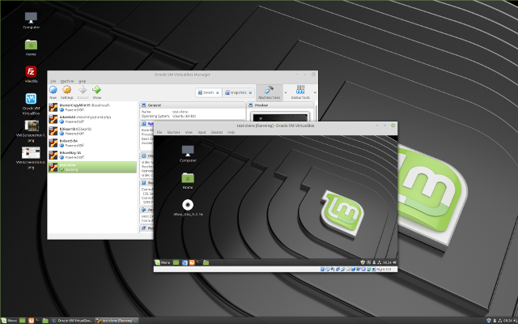

Projects and Screenshots
Project #1: VM, Screenshots and Ova
First, I copied the Master Linux Mint Copy

Then, I ran the Virtual Machine Copy
After that, I changed the VM password to secure my VM

Afterwards, I installed Filezilla using Terminal

Finally, I backed up my VM as an ova on Google Drive.